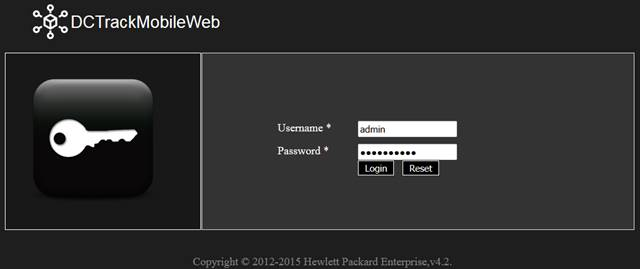
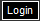
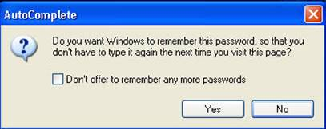
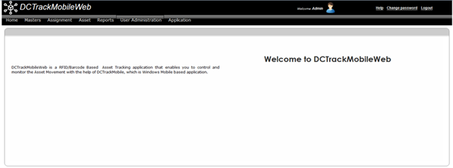
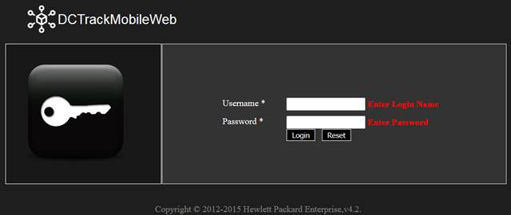

Based on user’s role that is defined in DCTrackMobileWeb system, user will be presented with a home page with options that is available to him.
Refer to the procedure below for details on logging into the DCTrackMobileWeb:
Any password expiry policy?
Yes. Every user’s password will expire after 90 days (this is a configurable parameter, please check the Web installation guide for how to change values of configurable parameters)
To log into DCTrackMobileWeb system,
1. In the browser, type the following URL,
http://servername:port/DCTrackMobileWeb/login.aspx
2. Refer to Browser Recommendation for browser compatibility and screen resolution details.
You will see the DCTrackMobileWeb Login screen.

Figure 3: DCTrackMobileWeb Login Screen
3. Input <username> on the Username field.
4. Input <password> on the Password field.
You will see password entered is masked.
5.
Click Login 
For first time login, you will see the AutoComplete dialog box.

Figure 4: AutoComplete option
6. Click Yes button to remember password when logging into DCTrackMobileWeb using the same computer or click No button if you don’t want Windows to remember the password entered.
Upon successful login, you will see the DCTrackMobileWeb Home page.

Figure 5: DCTrackMobileWeb Home Page
I have tried to login but was unsuccessful. What will happen if I unsuccessfully login for several times?
If you have tried to login and was unsuccessful, you will see the message: “Authentication Failed.” Note that failure to successfully login for three (3) consecutive times will lock your user account. If this happens, please contact your System Administrator, to reactivate your account. By default, the maximum number of login attempts is set to 3. This is a configurable parameter, ‘MaxNoOfLoginAttempts’, specified under the <appSettings> sections in the Web.Config file.
What will happen next time I login if I have previously selected the AutoComplete option?
If you have chosen for Windows to remember your password, every time you login, Windows will provide a selection to automatically fill in your username and password. Refer to the screenshot below.

Figure 6: DCTrackMobileWeb Login Page with Auto complete function
|
Copyright © 2019 Hewlett
Packard Enterprise,v5.2.
|